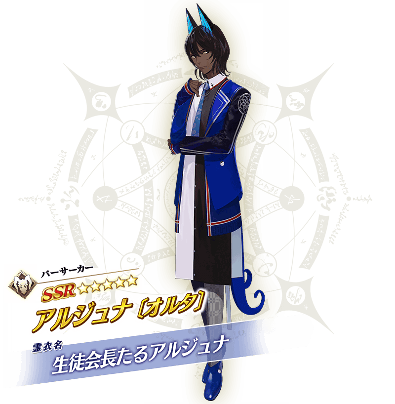
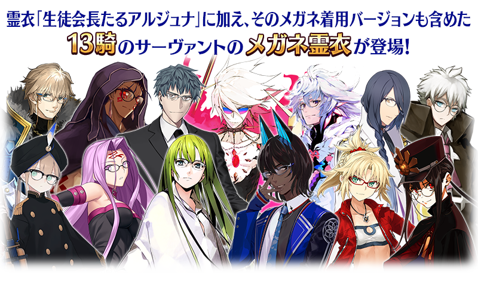
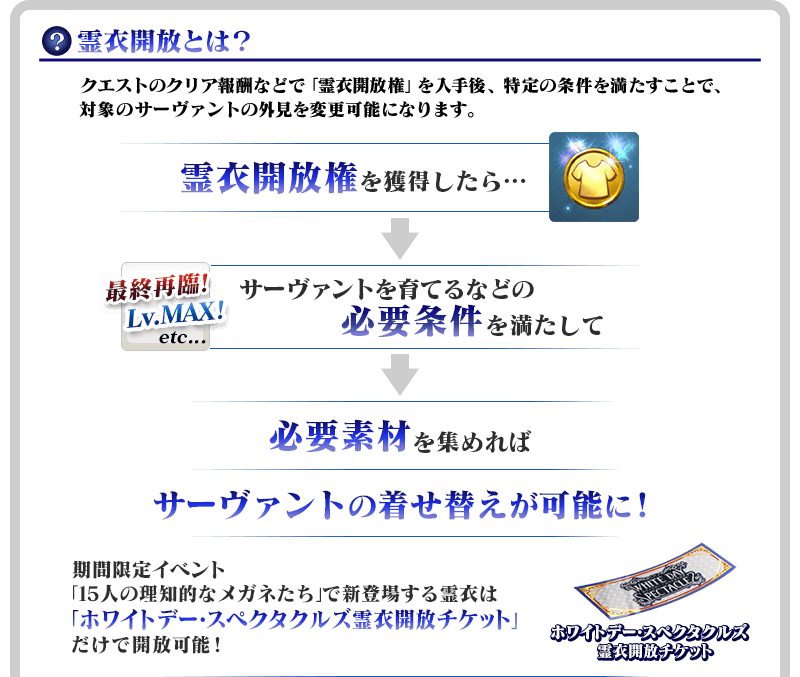
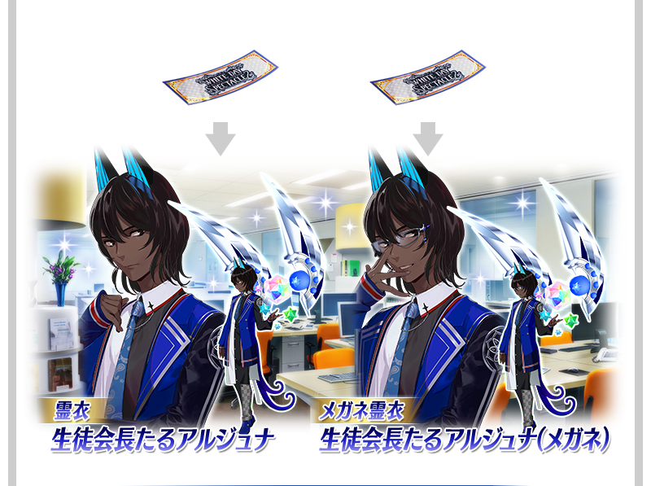
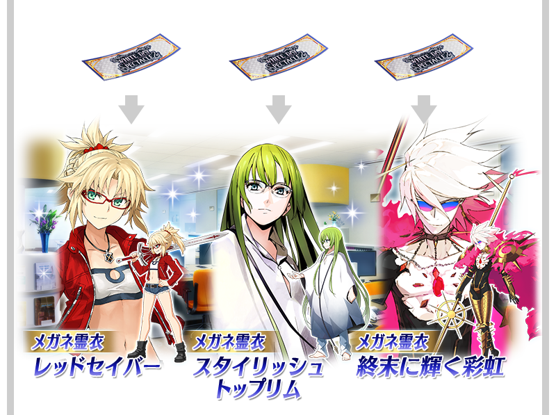
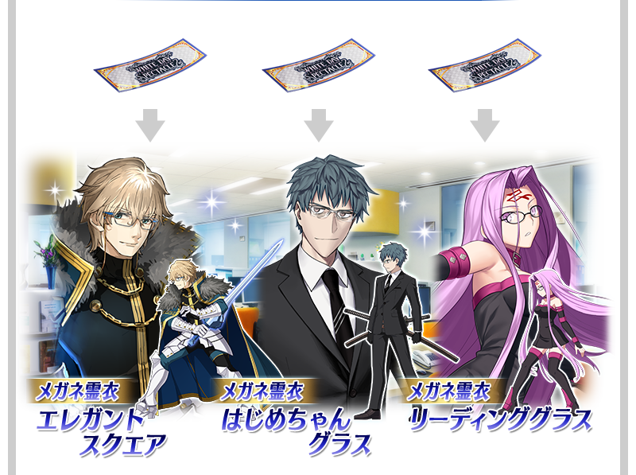
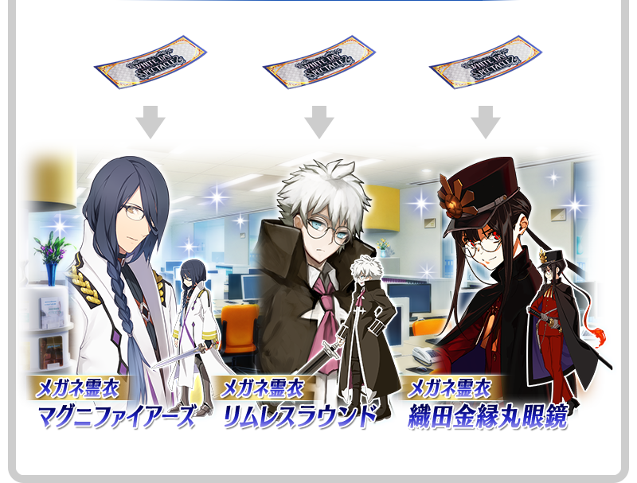
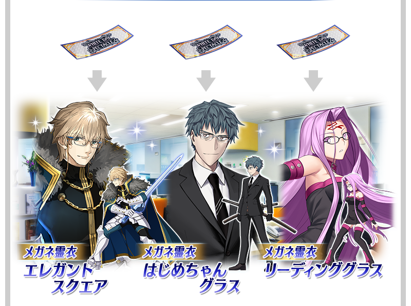
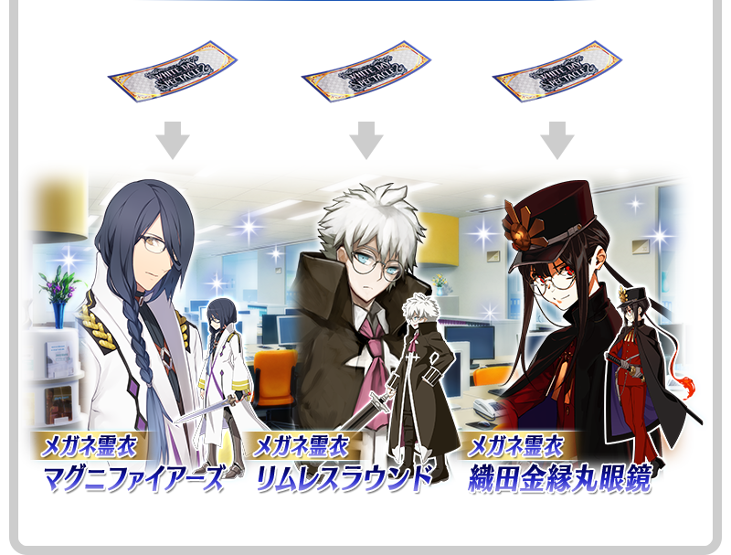

做為預定「White Day Spectacles」一個內容的期間限定活動「15人的理智眼鏡們」中，「★5(SSR)阿周那〔Alter〕」的靈衣「擔任學生會長的阿周那」與本活動的故事中從者們成為戴上眼鏡之姿的13位眼鏡靈衣新登場！
此處的靈衣，在通過特定關卡的話，可靠活動道具交換入手靈衣開放權。
無論哪個靈衣都可靠White Day Spectacles靈衣開放券來開放。
※本頁面皆為開發中圖片。會有與實際圖片相異的情況。 ※在2022年2月27日(日)播送節目內公開的內容皆為開發中，與實際內容有所差異。
◆交換期間◆
2022年3月2日(三) 17:00～3月23日(三) 11:59
※請注意活動道具交換期間結束後，會變得無法入於活動新登場靈衣的靈衣開放權。


 ※3月1日(二) 18:00圖片更新
※3月1日(二) 18:00圖片更新



 




「靈衣開放」是自強化畫面進行。
※「靈衣開放」後會自動切換戰鬥角色和圖示。若想回到「靈衣開放」前的狀態和變成其他再臨階段的情況，可自從者詳細畫面變更。 ※進行「靈衣開放」不會讓職階和能力等有所變化。
◆有關期間限定活動「15人的理智眼鏡們」中新登場靈衣的靈衣開放權的注意◆
※以下的從者的靈衣、眼鏡靈衣，會隨著外觀變化語音。
・★5(SSR)阿周那〔Alter〕
※以下的從者的眼鏡靈衣，會隨著外觀變化一部份語音。
・★5(SSR)莫德雷德(Saber)
※以下的從者的眼鏡靈衣只變化外觀，語音不會變化。
・★5(SSR)恩奇杜
・★5(SSR)迦爾納
・★5(SSR)尼莫
・★5(SSR)梅林
・★5(SSR)庫・夫林〔Alter〕
・★4(SR)高文
・★4(SR)齋藤一
・★3(R)美杜莎(Rider)
・★3(R)馮・霍恩海姆・帕拉塞爾斯
・★2(UC)夏爾＝亨利・桑松
・★1(C)織田信勝
※對象從者請注意未持有的情況，可入手靈衣開放權。但無法進行靈衣開放。
※「★5(SSR)阿周那〔Alter〕」的眼鏡靈衣是本活動中初登場靈衣「擔任學生會長的阿周那」的戴上眼鏡版本，語音與靈衣「擔任學生會長的阿周那」相同。
※「★5(SSR)莫德雷德(Saber)」的眼鏡靈衣是在2020年舉辦的期間限定Fate/Apocrypha×Fate/Grand Order特別活動「復刻版:Apocrypha/Inheritance of Glory -Triumphal-」中初登場靈衣「圖利法斯的記憶」的戴上眼鏡版本，語音與靈衣「圖利法斯的記憶」相同。
※各靈衣的靈衣開放必須的「White Day Spectacles靈衣開放券」只限活動舉辦期間中能入手。
※活動期間結束後，在進行各靈衣的靈衣開放時變得可選擇使用「White Day Spectacles靈衣開放券」開放或使用QP與素材開放。
※「★5(SSR)阿周那〔Alter〕」的靈衣「擔任學生會長的阿周那」與眼鏡靈衣「擔任學生會長的阿周那(眼鏡)」是不同靈衣，每個靈衣必須分別進行靈衣開放權的入手與開放。
介紹各自開放靈衣「擔任學生會長的阿周那」與眼鏡靈衣「擔任學生會長的阿周那(眼鏡)」的「★5(SSR)阿周那〔Alter〕」寶具演出！
介紹開放新追加眼鏡靈衣的12位從者們寶具演出！
【★5(SSR)莫德雷德(Saber)】
【★5(SSR)恩奇杜】
【★5(SSR)迦爾納】
【★5(SSR)尼莫】
【★5(SSR)梅林】
【★5(SSR)庫・夫林〔Alter〕】
【★4(SR)高文】
【★4(SR)齋藤一】
【★3(R)美杜莎(Rider)】
【★3(R)馮・霍恩海姆・帕拉塞爾斯】
【★2(UC)夏爾＝亨利・桑松】
【★1(C)織田信勝】
【3月2日(三) 17:00追記】
關於現在舉辦中的「White Day Spectacles」「15人的理智眼鏡們」外，同時舉辦的期間限定「White Day Spectacles Pick Up召喚」的詳情，請自下述橫幅確認。
■「White Day Spectacles」詳細情報

■「15人的理智眼鏡們」詳細情報

■「White Day Spectacles Pick Up召喚」詳細情報